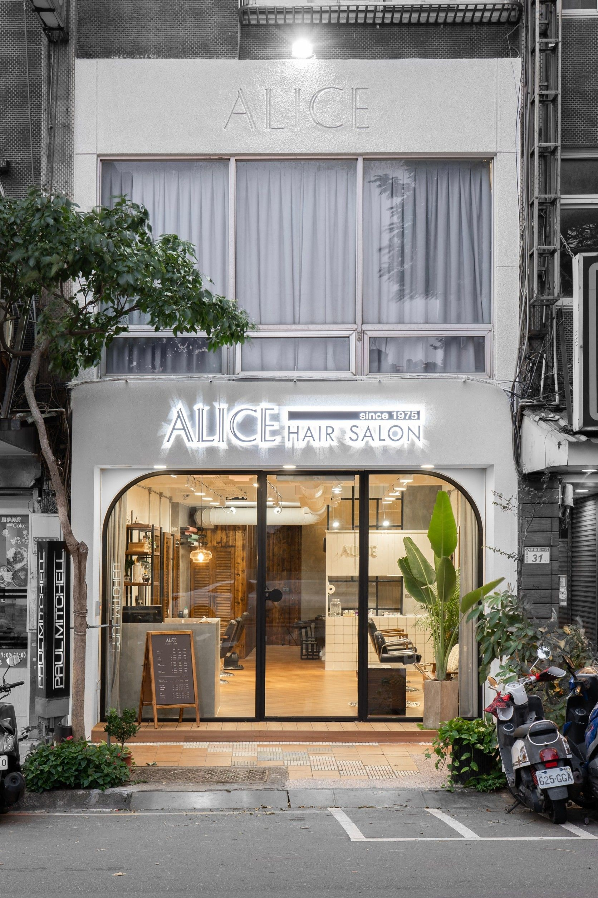
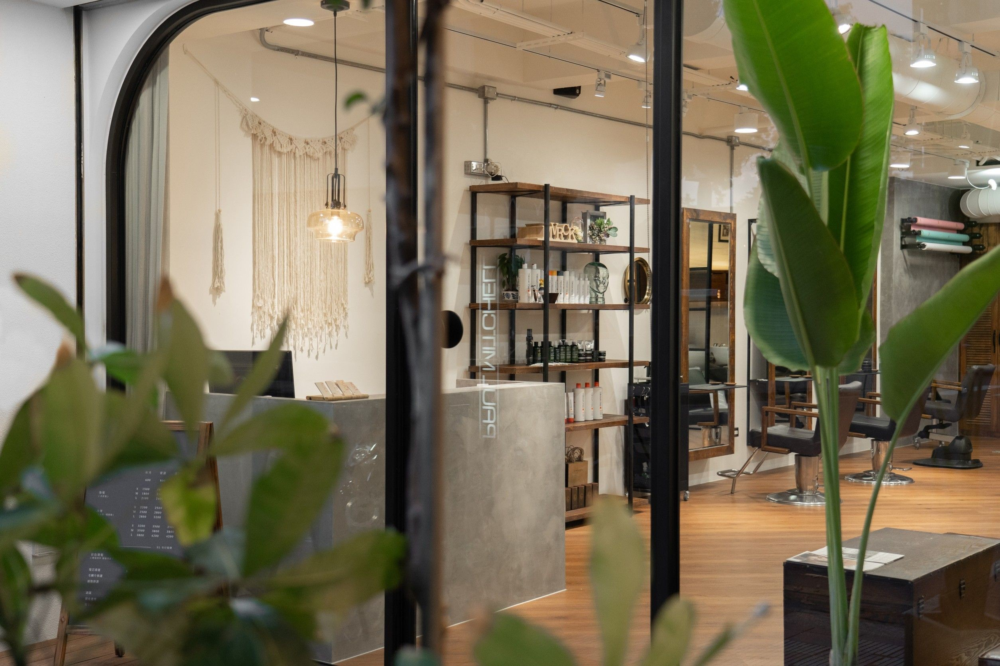

Add LINE
Send the service you want, current hair photos, reference style and preferred visit times.
Booking & Access
ALICE mainly works by appointment. Before booking, you can send your current hair condition, previous color or perm history, reference photos and preferred visit times through LINE.

Send the service you want, current hair photos, reference style and preferred visit times.
The team will review your hair condition and service time, then help arrange a stylist and appointment slot.
Your stylist will confirm hair condition, process and pricing in person before starting the service.
Access
ALICE is located at No. 29, Sec. 1, Xinnan Rd., Luzhu District, Taoyuan City. You can use Google Maps to navigate directly to the salon.

Parking is available in the W1 community underground parking lot, with the entrance on Zhongzheng Road. There is also a paid parking lot across from the salon. No parking discount is currently provided.
Yes. Please call 03-3524645 or 0933044645. If you need an initial quote, we still recommend sending photos through LINE for easier assessment.
Please contact us by LINE or phone as early as possible. Notice by the day before your appointment is recommended so the team can adjust the schedule.
LINE Booking
Please include front, side and back photos of your current hair, plus the service or style you have in mind.